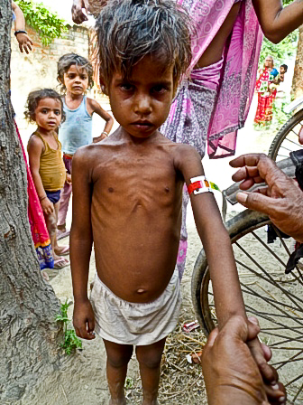

Farenin Ruhuna Fatiha
Sevgili fare kardeş! 45 derece sıcakta, ilaç depomuzun tek klimasının içindeki kabloyu yiyerek elektrik çarpması sonucu intihar etmen konusundaki kararına saygım sonsuz! Ama pervane motorunu da bu vesileyle yakman ruhuna iki fatiha okumama sebep oldu. Yedek parça arayışlarımıza fare cennetinden desteklerini bekliyorum. Bu arada ailelere de sosyal bir mesajım var: Yaz tatillerinde lütfen çocuklarınızı motor ustası, marangoz ya da kaynakçının yanına çırak verin. Öğrendiklerini hayatları boyunca yanlarında taşımanın yanında okulda öğrendikleri teorik safsataların ötesinde ellerini kullanıp işe yarayabilecekleri bir zanaat edinmiş olurlar.
Sevgili Prenses! Saatte yarım litre terlemeye alışıp artık yazı yazabilecek kıvama gelmem zaman aldı kusura bakmayasın. Arayı çok açtım yine. Farelere laf anlatmaya çalışmaktan kelamımı sana yazcak mecalim kalmadı. Ellerimden akan ter bilgisayarımı bozmazsa bu aralar nelerle uğraştığıma ilişkin bir fikir vermeye çalışacağım sana.
Mayıs’ta kısa bir Türkiye macerasından sonra yine Hindistan’ın kuzey doğusundaki Bihar eyaletinde, bu sefer Biraul isminde bir köyde., Sınır Tanımayan Doktorların bir projesinde saha lojistik sorumlusu olarak görevlendirildim. Jiplerden su pompalarına, medikal cihazlardan bilgisayarlara kadar her şeyin çalışır durumda tutulmasından sorumlu olmanın yanında her türlü tıbbi malzemenin tedariği ve içme suyu, atık su, tıbbi atık yönetimi, hijyen de dahil olmak üzere bir sağlık tesisinin çalışır durumda tutulmasına dair herşey çalışma alanıma giriyor.
Bu projede gıdasızlıktan dolayı kritik durumda olan, yetersiz beslenme yüzünden aşırı kilo kaybeden 6 ay ile 5 yaş arası çocukları sağlıklarına kavuşturmaya çalışıyoruz. Yaşını doldurup hala doğum kilosunun üzerine çıkamamış bebeklerden, 5 yaşında 6 kilo kalmış ama hala gözlerindeki yaşam kıvılcımını yitirmemiş ufaklıklardan bahsediyorum. 13 yatak kapasiteli bir stabilizasyon merkezimiz var. Ayrıca 5 civar köyde günübirlik mobil tarama ve tedavi çalışmaları yürütüyoruz. Yaklaşık 80 kişilik bir ekiple ayda ortalama 600 çocuğa ulaşıyoruz. Bunun yanında bilgilendirme ve eğitim çalışmalarıyla beslenme, emzirme, hijyen ve salgın hastalık kontrolü konusunda duyarlılık oluşturmaya çalışıyoruz. Hindistan’ın ölçeği ve nüfus yoğunluğu düşünüldüğünde çalışmalarımız devede sinek kalsa da çocuk ölümlerinin önüne geçebilecek, Hindistan gerçeklerine uygun, yerelde uygulanabilir bir model yaratıp bu modeli yerel sağlık sistemine devretmek gibi bir perspektifle hareket ediyoruz.
Şimdi tabii ben tıbbi personel olmadığımdan genel olarak doktor, hemşire ve diğer sağlık çalışanlarının işlerini yapmasını sağlayacak temel destek hizmetlerinin yürütülmesiyle uğraşıyorum. Günlük kaygılarım da o yüzden oldukça farklı. Arkadaşlarım kafalarında beni, bi deri bi kemik kalmış bir bebeğin başında dururken hayal etse de ben o sıralarda sıcaktan ne yapacağını sapıtmış bir jeneratörün başında, ”Nooldu bu alete şimdi, ne güzel çalışıyordu.” konulu hararetli tartışmalar yürütüyorum. Çünkü o vantilatörlerin çalışmadığı her saat bebeklerin vücut sıcaklığı yaklaşık yarım derece yükseliyor. Ya da bu çocuklara verilen ilaçlar uygun koşullarda saklansın diye kimselere sağlamadığımız lüksü ecza depomuzdan esirgemiyorum.
Son iki haftada jeneratör ve klima facialarını başarıyla atlatıp içme suyu ve elektrik sistemleriyle ilgili küçük krizleri atlattıktan sonra bu hafta depoda bulduğum kıçtan motorlu bir botu elden geçirip bakımını yapmak gibi bir önceliğim var. Sıcaktan kırılan dümdüz ovanın ortasında ne kadar absürd gözükse de bir hafta sonra yağmur yağmaya başlayacak ve yaklaşık 3 ay boyunca yağmaya devam edecek. Bir yanım, yağmur yağsa da ortalık serinlese konulu serzenişlerde bulunsa da diğer yanım yağmurun getirecekleri konusunda oldukça kaygılı. Muson yağmuru diye kulağa çok romantik gelen hadise Hint okyanusundan gelen sıcak hava dalgasının Himalayalara çarpmasıyla vuku buluyor bu civarlarda. Himalayalar’dan eriyen mevsimlik karı taşıyan bütün nehirlerin birleştiği bir noktada yaşayınca da insanlar her sene sel felaketine maruz kalmaya çoktan alışmışlar. Ama bu ishal, salgın hastalık, kızamık ve gıdasızlıktan çocuk ölümlerini oldukça arttıran bir durum. Hastalar bize gelemeyince de bizim hastalara gitmenin yolunu bulmamız gerekiyor.
Yol denen kavram Hindistan’ın bu ücra köşesinde bizim anladığımızdan biraz daha farklı birşey. Türkiyede off-road diye fiyakalı tiplerin jiplerle, endurolarla daldıkları sahalar burada yol diye adlandırılıyor. Hayatımda ilk kez gördüğüm modifiye araçlarla bu yollarda seyahat eden insanların motor sporu denen kavramı bildiklerini sanmıyorum. Ama 125cc motorla işe gitmek için ciddi teknik beceri gerekiyor. Modifiye araç derken modifikasyonların sadece daha fazla insanı taşımak için yapıldığını da belirtmem gerekiyor. Tavandaki ızgarayı güçlendirip aracın tepesine 10 kişi fazladan oturtmak ya da bir adet jipi ortadan kesip boyunu uzatmak gibi. Yine de bozulan her şeyi bi şekilde tamir etmeyi beceriyorlar. Başka pek bi alternatif yok zira. Yine de araba manyağı bir prenses okuru şaside çamur birikmesinden dolayı ölüsan paslanmayı nasıl önleyeceğimi deyiverse ne güzel olacak. Bizim jipler yakında bisküviye dönecek gibi gözüküyor.
Geçende hangi yollar su altında kalacak, alternatif ulaşım yolları neler diye bir harita çalışması yürütüyordum ki akşamüstü yarım saat kadar yağmur yağdı. Ofisten eve giderken bizim hint malı 4×4 çamura saplandı. Zaten ne zaman beyaz giysem çamura saplanıyoruz. Arabadan inip üçüncü adımımı atmıştım ki terlikleri de balçığın içinde bıraktım. Karanlıkta çıplak ayak, balçığın içinde yokuş yukarı yürümek çok eğlenceli oluyor. Bütün prenses okurlarına tavsiye ediyorum. Ayak parmaklarının pençe işlevini keşfetmiş bulunuyorum. Bütün bunlar olurken komşu eyalet Assam’da sel yüzünden bir milyon kişinin evlerini terk etmek zorunda kaldığını haberlerde okuyup Assamlı bir şoförümüzü izne göndermek zorunda kalınca kaygılarım biraz daha artıyor. Hintli iş arkadaşlarım benim kadar kaygılı gözükmüyor. Zira bir milyon kişinin evsiz kalması sel durumunu bir felaket olarak olarak nitelemek için yeterli değil. Zaten her sene aynı şey oluyor. Biz de artık bize düşen sel ile bi şekilde başa çıkacağız. Ama sevgili Muson, birazcık daha sakin ve yavaş gel diliyorum senden.
Son sözüm de balkonda bulunan lavaboma yerleşmeye karar veren eşek arılarına! Arkadaşlar, sizi hergün izliyorum. Çok sağlam çalışıp kısa sürede güzel bir petek yapmayı başardınız. Tebrikler. Bir önceki peteğinizi ve kraliçe arınızı çakmak ve deodorant kombinasyonu ile yaktığım için çok pişmanım. Kızmadınız ve tınmadınız, kaldığınız yerden işe devam ettiniz. Takdir ediyorum. Bana barışın anlamını öğrettiniz. İnsanı yardım sektöründe iş ararsanız haberim olsun. Öpüyorum.


{kind=link}
{kind=link}
Nacizane cozum onerilerim:
1. Kritik kablolarin korunmasi icin celik ya da plastik boru veya spiral kablo hortumu (hangisini bulabiliyorsan artik)
2. Camurun girmesini engelleyemiyorsan cikmasina izin ver. Camurun en cok biriktigi yere delik, yarik aç.
3. Klima gibi kritik cihazlar icin, kabloyu cihaza direkt baglama. Araya sigorta gibi bir sey uydur.
4. Yanan motorlarin sadece sargilari degistirilerek tekrar calistirilmasi mumkun. Orada mumkun mu bilemiyorum tabii.
5. Motor cok pahali degildir ama temin suresi uzundur. Kritik cihazlar icin birer adet yedek motor stokta tutman hayirli olacaktir.
6. Arilara atesle degil dumanla mudahale et.
7. Terli terli su icme.
Kolay gele
Huseyin kardesim onerilerin icin tesekkur ederim.
1.Bahsettigim kablolar klimanin icinde. o fare oraya nasil giriyor anlamadim ama giriyo iste. klima icin bir tel kafes yaptiracagim en sonunda. o olacak. kablolarin hepsini plastik borularin icine yerlestirdim zaten. yagmur ve nemden dolayi zaten biraz mecburen.
2. walla araclarin altinda camur zaten saside kendi deliklerini acmaya basladi curume dolayisiyla. simdi olayin cok bahsetmedigim bi tarafi daha var. “open defacation” denen bir kavram var ingilizcede. acik alana sicmak diye cevirebiliriz. simdi her sabah bu arabalarin gectigi yollar bokla dolu oldugundan arabanin sasiye yapisan camur oldukca asidik diyim ben sana nazik tabirle. arabalarin altini plastik boyayla boyamayi kafaya koydum gibi. du bakalim.
3. elektrik altyapisini sigorta manyagi yaptim. her cihazin kendi sigortasi olmasini disinda klima jeneratore ulasana kadar arada degisik cap ve ozelliklerde 3 tane sigorta var. jenerator cikisinda 7.5 Kva bir otomatik voltaj regulatoru var. ayrica klima icin de 1.5 Kva bir otomatik voltaj regulatoru mevcut. Benden once akilli biri faydadan cok zarar verdigi icin sehir sebekesiyle baglantiyi kesmis. zaten gunde 2-3 saatten fazla elektrik yok sebekede. O da 100 ila 250 volt arasinda hizla dalgalanip ne varsa yakiyor.
4. Motor sargisi dedigin bakir bobin galiba. (copper coil) Onlari da tamir etmenin yolunu bulduk. biraz zor oluyo ama sargiyi acip kopuklugu bulunca cozuluyo. akli basinda bir insan evladi bulup 2 gun basina kitleyince oluyor. ama bu pervane motorunun bobini cok ince. acinca komple elimizde kaldi.
5. bir degil iki tane yedek siparis verdim. o fareleri de buldugum yerde gaddarca domaltiyorum deyim ben sana 🙂
6. bunlar bal arisi degil esek arisi.benim de bal toplamak gibi bi niyetim yok. fena fikir deilmis bak aslinda. neyse bunlar petegi yakmadan vazgecmiyorlar. yakinca bile vazgecmiyorlar zaten. ben de her adimi denedikten sonra koloniyi yok etmeye niyetlendim. en sonunda careyi baris ve kabullenmede buldum.
7. terli terli su icmezsem susuzluktan olurum zira gun icinde terlemedigim tek zaman dusun altinda oldugum zaman. 🙂
daha egzantrik teknik problemlerle yakin zamanda karsinizda olacagimdir insallah.
1. allah belasını versin farelerin o zaman
2. boya iyi bir fikir
2.1 boyaya başlamadan önce paslanmış bölgelerin tümünü temizlemen gerekli. yoksa boya atsan da içten içe çürümeye devam eder. bunun için tel fırça, zımpara vb. kullanabilirsin.
2.2 ISO tarafından hazırlanmış bir korozyon sınıflandırması ve boya firmalarının bu sınıflandırmaya uygun boya tipleri var. boya seçerken bu bilgileri dikkate alabilirsin. http://www.livingsteel.org/corrosion-3. garantili olsun diye en korozif ortama uygun boya seçmek emniyetli olur.
6. duman taktiği benim nevşehirli cavit usta’dan öğrendiğim bir taktik. denemeni tavsiye.
7. o zaman taşa oturma bari.
haa bir de şu var.
5. yedekte bekleyecek motorlar için nemden kaynaklanan ciddi bir tehlike var. şimdi orası nemli bir yer. motorun bazı yerlerine hava girer, havadaki nem ortam sıcaklığının düşmesi sebebiyle yoğunlaşıp su olursa ve de sen buna dikkat etmeden çalıştırırsan o motoru daha kullanmadan eline alırsın. bu sebeple ilk çalıştırma öncesi motoru kuru havayla ısıtman gerekebilir. kendinden “anti-condensation heater”ı olan motor almak da işe yarayabilir.
çok güzel yazmışın gene ha… allah kolaylık versin diyom ben sana. ben yambiodan şikayet ediyodum ama sizin proje süpersonikmiş 🙂 benim şu sıralar en büyük derdim bir hastayla beraber gelen sülalesini hastaneden nasıl çıkarırım ki doğru düzgün temizlik yapabilelim 🙂 jenarator desen bu sozcuğu kullanmamaya calısarak ugursuzluk olasiligini azaltmaya calisiyom 🙂
arabaları yıkayınca bok gitmiyo mu bu arada? su mu yok?
Kablolara zift sür,farelere çözüm olur.
Arılar dumanla sakinleşir.Yine oradadırlar.
Çamur biriken yere gres yağı sür.Çamur çürütemez şaseyi.Tek dezavantajı zamanla incelir yenilemen gerekir gresi.
Klimanın bulunduğu yere rüzgarda yılan sesi çıkaran enli paket rafyalarından ger.Birde ters hüni geçir kablo ve direklere.onu geçemiyorlar.
Tuz torbaları nemi alır.Rakı masalarındaki nemli tuzluktan aklına gelsin.
Oda girişlerine pencere ve kapı üstlerine plastik veya demir boru çak.Bu borularda yürüyen suyu damlatacak kadar delik aç.Eğer bu borulardan sürekli su damlarsa aralarından geçen hava serinler.
Çatılar tamamen kapalı olmasın.Sıcak hava yükseldikçe aşağıya inme eğilimine girer.Çatıda aralık olması lazım.
Motor sarımı zor değil,binlerce yaptım.Zor olan sarım bitimindeki bağlama leğimi.Bununda çözümü ezmek.
Şimdiki motorlar artık nem almayan cinsten yapılıyor.Birde nem spreyi var.Bir kere tüm cihaza sıkıyorsun,motor su içinde bile çalışıyor.mesela: http://www.epd.com.tr/sprey.html
Eğer suyunuz az ama sis varsa,2 direk arasına ince gözenekli ağ ger.Buraya çarpan sis takılır ve bunu dipten toplayacak bir yan kesilmiş boruyla varillere toplarsın.
aklıma gelen bunlar.Hep şantiye yokluğunda başımıza gelip bulduğumuz çözümler.
ha birde aklıma geldi sorayım.Sen bizim klimayı niye kapattın len.